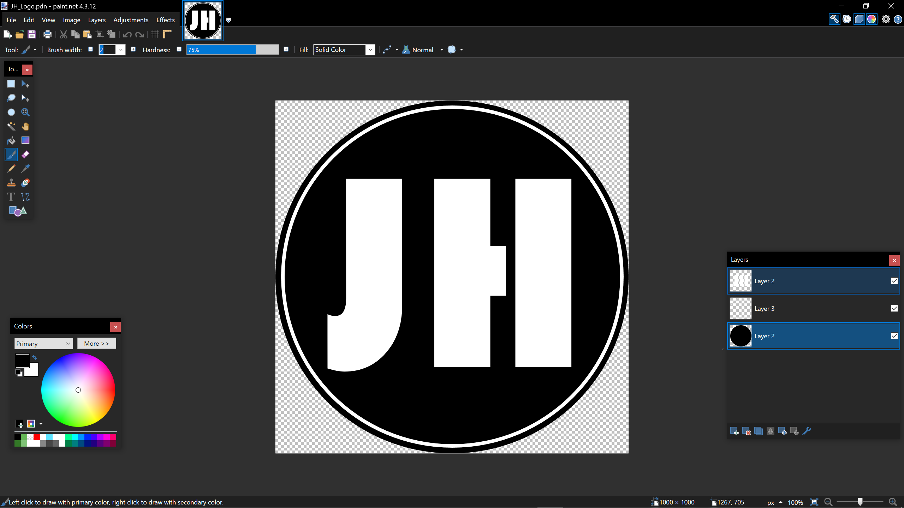
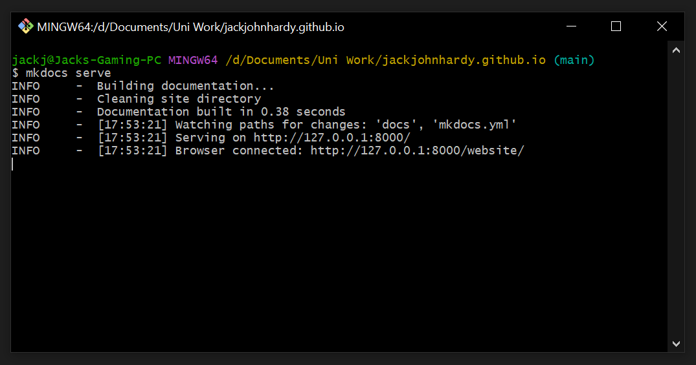
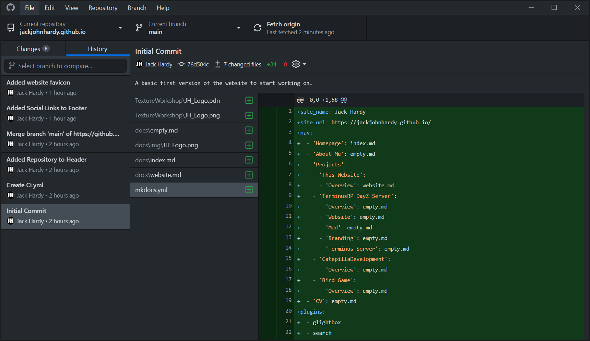
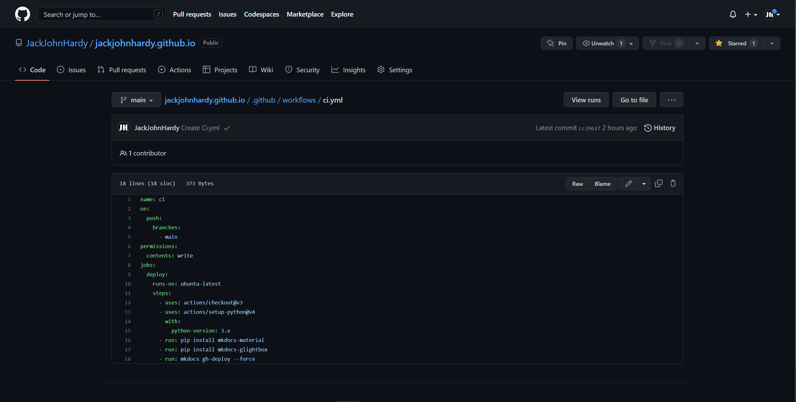
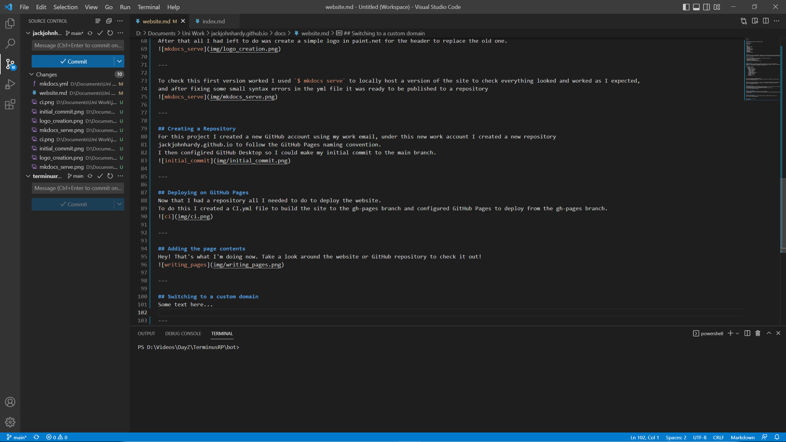
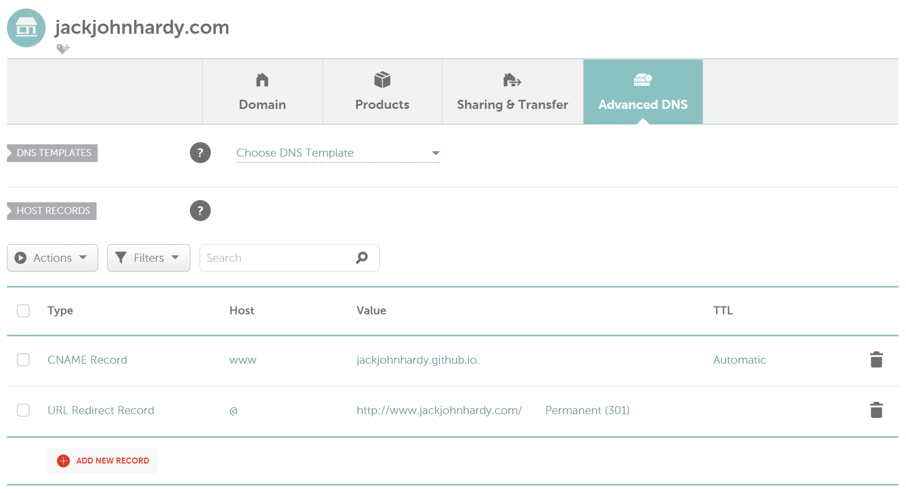

This Website
Overview
This page documents the process of making this website.
Started: 23/12/22
Completed: N/A
Project uses:
- MkDocs
- Material for MkDocs
- GitHub.com
- GitHub Desktop
- GitHub Pages
- Continuous Integration
- Visual Studio Code
- Paint.net
- Namecheap.com
- CNAME Records
- URL Redirect Records
Planning
As this is only a short and simple project, I decided not to plan too much so that I could get straight to writing about my projects. Since I had already make a simple website a couple weeks earlier for another project using Material for Mkdocs I decided to reuse what I had already built in that project.
My plan for this project:
- Copy and edit the TerminusRP website config for about, projects, and CV tabs
- Create a Guthub repository for the project
- Deploying using GitHub Pages
- Writing out all the pages in markdown
- Switching to my own custom domain for the site
Initial Version
To make the first version of the website I created a local copy of my TerminusRP website.
Using this as a base I removed the old markdown files, and made a simple homepage in index.md as a placeholder.
Following this I reworked the site navigation in the mkdocs.yml file.
nav:
- 'Homepage': index.md
- 'About Me': empty.md
- 'Projects':
- 'My Website': website.md
- 'TerminusRP DayZ Server':
- 'Overview': empty.md
- 'Website': empty.md
- 'Mod': empty.md
- 'Branding': empty.md
- 'Terminus Server': empty.md
- 'CatepillaDevelopment':
- 'Overview': empty.md
- 'Bird Game':
- 'Overview': empty.md
- 'CV': empty.md
After that all I had left to do was create a simple logo in paint.net for the header to replace the old one.

{kind=link}
{kind=link}
To check this first version worked I used $ mkdocs serve to locally host a version of the site to check everything looked and worked as I expected,
and after fixing some small syntax errors in the yml file it was ready to be published to a repository

{kind=link}
Creating a Repository
For this project I created a new GitHub account using my work email, under this new work account I created a new repository
jackjohnhardy.github.io to follow the GitHub Pages naming convention.
I then configired GitHub Desktop so I could make my initial commit to the main branch.

{kind=link}
Deploying on GitHub Pages
Now that I had a repository all I needed to do to deploy the website. To do this I created a CI.yml file to build the site to the gh-pages branch and configured GitHub Pages to deploy from the gh-pages branch. 
{kind=link}
Adding the page contents
Hey! That's what I'm doing now. Take a look around the website or GitHub repository to check it out! 
{kind=link}
Switching to a custom domain
To use my own domain for my GitHub Pages site I purchased the domain jackjohnhardy.com from Namecheap.
I then used Namecheaps advanced DNS to create a CNAME and a URL redirect records.

{kind=link}